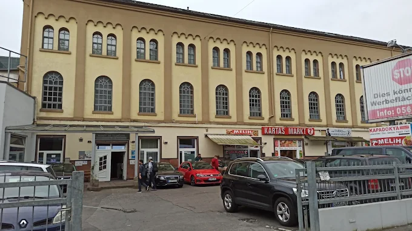
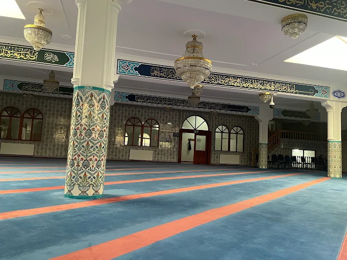
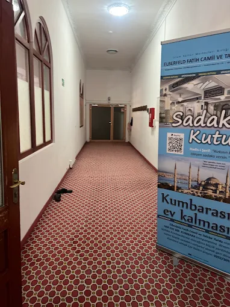
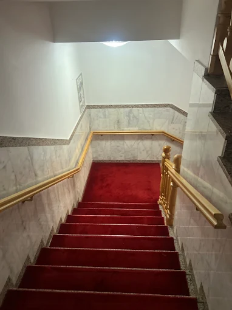

Hakkımızda
Wuppertal'ın Elberfeld semtinde bulunan derneğimizin kökenleri, değerleri ve tarihçesi hakkında bilgiyi bu sayfada bulabilirsiniz.
Wuppertal'ın İlk Cami Cemaati
Cemaatimiz, uzun yıllardır insanlara hizmet yolunda gayret göstermektedir.
1970'li Yıllardan Bu Yana
Derneğimizin kökleri 1970'li yıllara dayanmaktadır. Bu itibarla cemaatimiz, Wuppertal'daki ilk cami cemaati ve şehrin en eski dini derneğidir. O günden bu yana toplumun yararı için hizmet etmekte, insanlara topluma uyum süreçlerinde ve dini hayatlarında rehberlik etmekteyiz.
Derneğimiz, giderlerini tamamen üyelerinin düzenli aidatları ve gönüllü bağışlarla karşılamaktadır. Kapımız herkese açıktır; önyargıları gidermek ve barış içinde bir arada yaşamı güçlendirmek için düzenli olarak diyaloğa önem veriyoruz.
Anlayışımızın temelinde Peygamber Efendimiz (s.a.v.)'in şu mübarek sözü yer almaktadır: “İnsanların en hayırlısı, insanlara faydalı olandır.” Bu ilke, eğitim, öğretim ve sosyal hizmet alanlarındaki günlük çalışmalarımıza yön vermektedir.
Misyonumuz ve Değerlerimiz
Almanya Federal Cumhuriyeti'nin özgürlükçü-demokratik temel düzenine kayıtsız şartsız bağlıyız ve Anayasamızın temel değerlerine saygı duymaktayız.
Ortaklığa dayalı entegrasyon ve toplumsal dayanışma, çalışmalarımızın merkezinde yer almaktadır. Derneğimiz kamu yararına çalışmakta olup siyasi partiler karşısında tarafsızdır.
Dernek Binamız ve Mekanlarımız
Friedrich-Ebert-Straße 175 adresindeki bina, dini eğitimin ve bir araya gelişlerin merkezidir.



